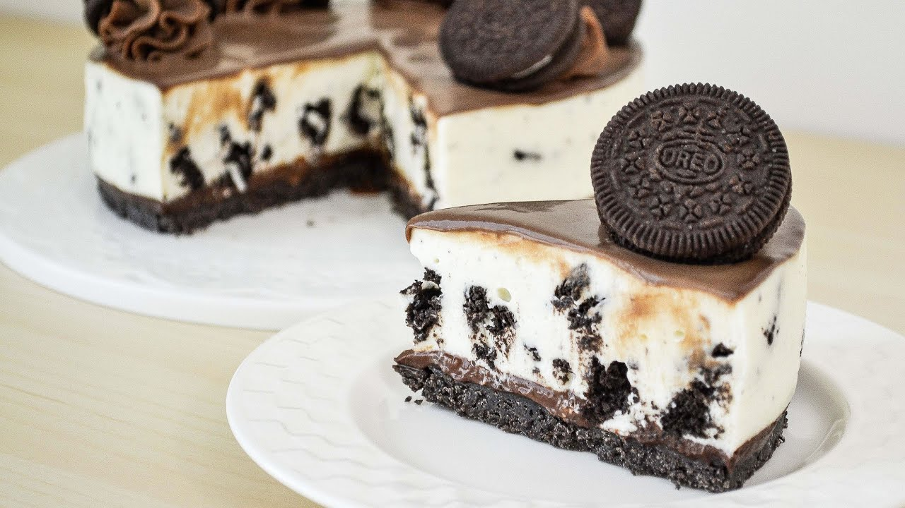

Cheesecake de Oreo

Un Cheesecake es un postre dulce, elavorado con queso crema y diversos sabores. En este caso, con galletas de chocolate Oreo.
Ingredientes
- Galletas Oreo
- queso crema
- manteca derretida
- leche
- gelatina sin sabor
Preparación
- Como primer paso, se debe separar el relleno de las galeltas de las tapas y ponerlos en contenedores distintos.
- Las galletas se deben triturar y se separa una parte para espolvorear al final de la preparación
- Para crear la base del cheesecake, mezclamos la galelta triturada con la manteca hasta que forme una consistencia uniforme
y lo distribuimos en la base de nuestra fuente. Lo dejamos descansar en la heladera
- Para hacer el relleno, calentamos un poco la leche y disolvemos la gelatina sin sabor.
- Mientras revolvemos en el fuego, agregamos el relleno de las galletas y el queso crema
- Revolvemos hasta obtener una consistencia homogenea. Una vez listo, dejamos enfriar unos momentos
- Verter la preparación en la base y espolvorear de manera uniforme la galleta separada al comienzo
- Dejar enfríar en la heladera hasta el postre tome una consistencia sólida